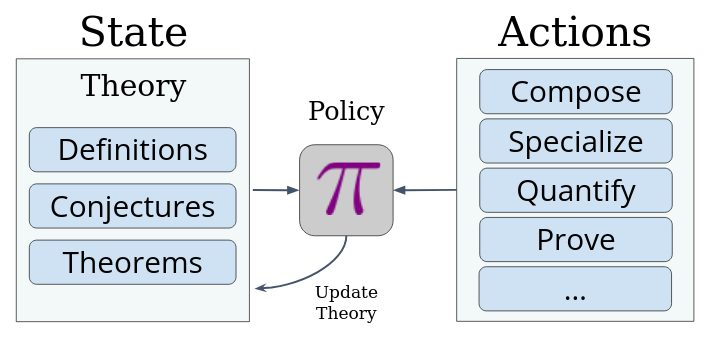
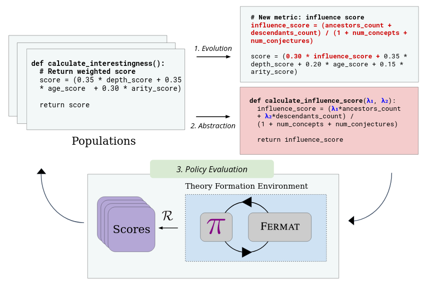
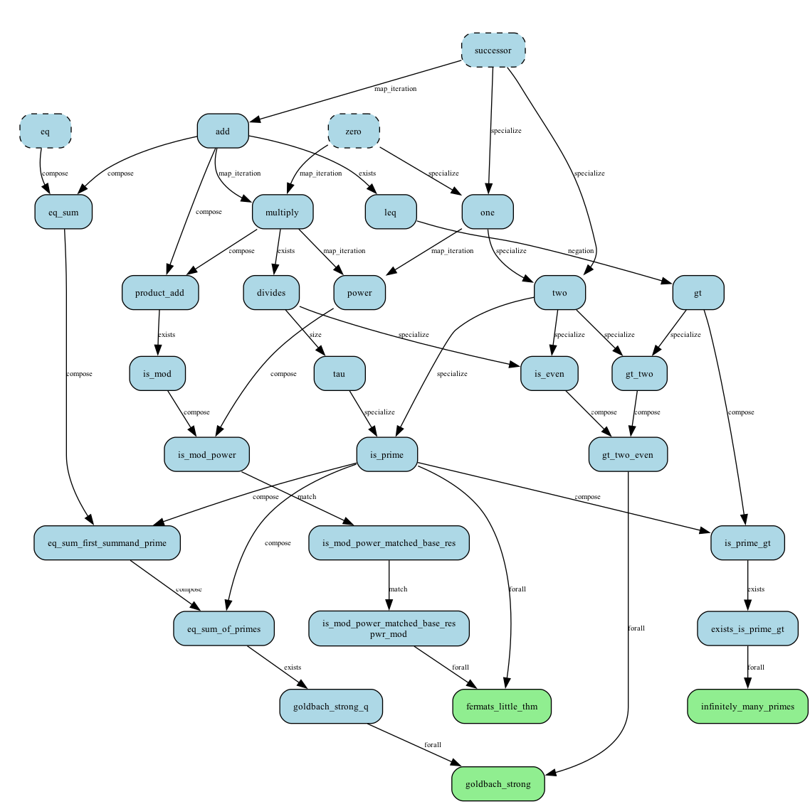
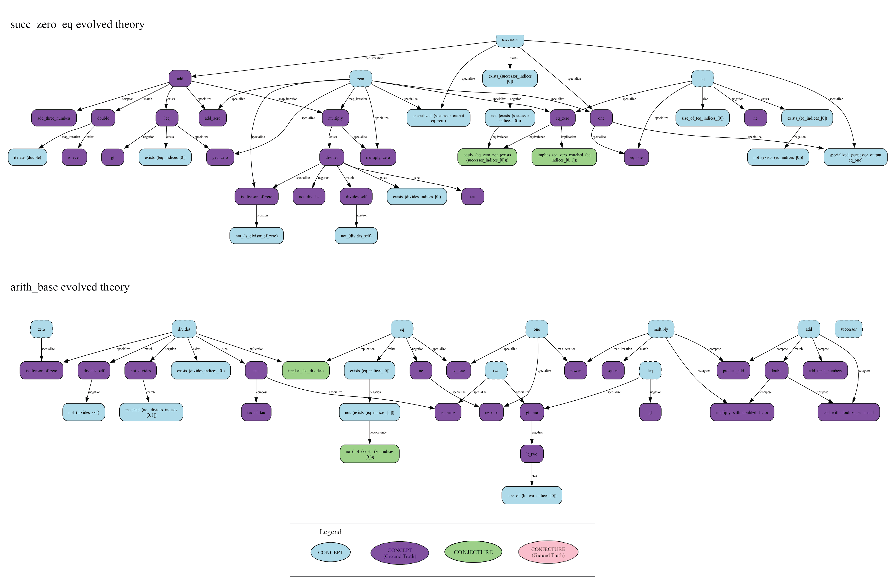
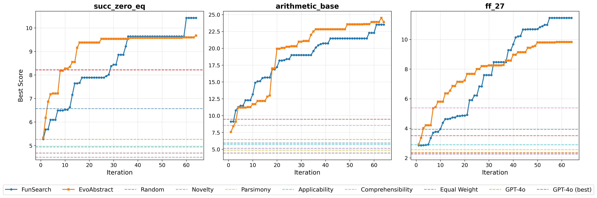

Can AI Learn What Makes Math Interesting?
Overview
AI is now solving problems that stumped mathematicians for decades. AlphaProof and AlphaGeometry 2 earned a silver medal at the 2024 International Mathematical Olympiad [1]. GPT-5 scores 94.6% on AIME 2025 without any tools. AlphaEvolve and Aristotle resolved Erdős problem #1026, open since 1975. By 2026, problem #281 had also fallen, and Tao was calling AI assistance in his own research “almost mundane” [2]. These are genuine open problems, solved by machines.
But in every one of these cases, a human decided what the problem was. The IMO problems were written by a committee. Erdős himself posed problem #1026 in 1975.
The real gap is not in solving but in creating. When Galois invented group theory, he was not answering a posed question. When Shannon defined information, he was not working from a problem set. When Riemann imagined curved geometry, no one had asked for it. These mathematicians chose what to study and built the language to study it.
Today’s AI cannot do that. It can win medals on a test someone else designed, but it cannot design the test. This paper takes a first step toward closing that gap, asking whether a system can learn to decide what is interesting in the first place.
This paper does not try to give AI the full range of mathematical creativity. Instead it carves out a tractable first sub-problem: can the judgment of “what is worth pursuing” (or interestingness [3][4]) be learned automatically?
It makes two significant contributions:
- It introduces FERMAT (Formation Environment for Reinforcement-learned Mathematical Theory), which casts automated theory formation as a Markov Decision Process: starting from primitive symbols, the agent builds a knowledge graph of definitions, conjectures, and theorems, earning a sparse reward whenever it independently rediscovers a concept from a curated benchmark. Unlike prior systems like HR [5] and AM [6], which were static symbolic pipelines with hand-coded heuristics, FERMAT opens the process to any learned RL strategy.
- It proposes EvoAbstract, which solves the resulting reward-sparsity problem by automatically discovering an interestingness measure (represented as a Python program) via LLM-driven evolutionary search over parallel islands; a second LLM periodically distils reusable subroutines from the best candidates into a shared library. The resulting measure recovers roughly 24 benchmark concepts from bare primitives, versus 8.6 for the best hand-crafted HR heuristic and 4.4 for a random policy.
The Combinatorial Search Space
Take three primitives: zero, the successor function $S$ (so $S(0)=1$, $S(S(0))=2$, and so on), and an equality predicate. From these alone you can start building. Apply an Exists rule to the product relation and you get divisibility. Apply Compose to get powers. Apply Implication to formulate a conjecture about primality. The space of reachable entities grows very quickly.
At each step there are hundreds of legal actions, and most produce either a trivially true statement or a concept already in the graph under a different name. HR [5] and AM [6] tamed this explosion with hand-tuned heuristics: reward short definitions (parsimony), reward novel example sets (novelty), reward widely applicable concepts (applicability). These heuristics encode real mathematical taste, but they are static. They cannot adapt to a new domain, to the current state of the theory, or to what the agent is trying to build toward.
Instead of hand-coding interestingness, this paper treats it as a learnable function.
FERMAT: Theory Formation as Reinforcement Learning
FERMAT formalizes theory formation as an MDP $(\mathcal{S}, \mathcal{A}, \mathcal{T}, \mathcal{R})$.
The state $S \in \mathcal{S}$ is a directed knowledge graph $G = (V, E)$. Each node $v \in V \subseteq \mathcal{M}$ is a mathematical entity, categorized as a definition ($\mathcal{D}$), a conjecture ($\mathcal{C}$), or a proven theorem ($\mathscr{T}$). An edge $(u, v)$ records that entity $u$ was used to construct $v$.
The action space $\mathcal{A}$ has three families:
- Definition production ($\mathcal{A}_{def}$): nine rules including Exists (existential quantification over a variable), Specialize (fix a variable to a constant), Compose (chain two definitions), and ForAll.
- Conjecture production ($\mathcal{A}_{conj}$): four rules including Implication (assert $P \Rightarrow Q$ over all inputs) and Equivalence.
- Proof actions $\mathcal{A}_{proof} = \{prove, disprove\}$: pass the conjecture to Z3; on success it becomes a theorem $\mathscr{T}$, on failure a counterexample is attached.
The reward is sparse and binary:
$$\mathcal{R}_{\mathcal{E}}(S, a, S') = \begin{cases} 1 & \text{if } m_{new} \in \mathcal{E} \\ 0 & \text{otherwise} \end{cases}$$
where $\mathcal{E}$ is a curated benchmark of 180 number-theory entities (from reflexivity of equality up to Goldbach’s conjecture) and 67 entities over $\mathbb{F}_{27}$.
The key design insight is that FERMAT strictly subsumes HR [5]: every HR step is a specific FERMAT action, and HR’s hand-coded heuristic selector is simply one policy. Any RL or search algorithm can be plugged in instead.

EvoAbstract: Learning the Interestingness Measure
The MDP above has an immediate problem: $\mathcal{R}_{\mathcal{E}}$ is so sparse that an RL agent cannot learn from it alone. The fix is an intrinsic reward that fires on every step:
$$\mathcal{R}_{\mathcal{I}}(S, a, S') = \mathcal{I}(m_{new}, S')$$
where $\mathcal{I}: \mathcal{M} \times \mathcal{S} \to \mathbb{R}$ scores the newly generated entity $m_{new}$ in the context of the current theory $S$. The agent follows policy $\pi_{\mathcal{I}}$, which greedily selects the highest-scoring action at each step.
Rather than hand-designing $\mathcal{I}$, the paper frames finding it as optimization. The goal is:
$$\mathcal{I}^* = \arg\max_{\mathcal{I}} \; \mathbb{E}_{\tau \sim \pi_{\mathcal{I}}} \!\left[ \sum_t \gamma^t \, \mathcal{R}_{\mathcal{E}}(S_t, a_t) \right]$$
A measure that maximizes long-term extrinsic reward is, by definition, the most useful guide.
$\mathcal{I}$ is represented as a Python program, not a neural network: interpretable, composable, and discovered subroutines can be reused across generations.
EvoAbstract finds $\mathcal{I}^*$ through a three-step loop over $k = 4$ parallel islands $\mathcal{P}_i$:
- Evolution ($\mathcal{L}_{var}$, GPT-4o-mini): in each generation, the LLM receives the top-performing programs from island $\mathcal{P}_i$ and generates new candidates.
- Abstraction ($\mathcal{L}_{abs}$): every 8 iterations, a
second LLM analyzes high-scoring programs and extracts reusable subroutines into a
per-island library $\text{Lib}_i$. These are then made available to
$\mathcal{L}_{var}$ for future generations. Example abstractions discovered:
compute_example_balance(a learned applicability-like score) andcalculate_uniqueness_score_v2(a refined novelty measure). - Policy evaluation: each candidate runs 16 rollouts inside FERMAT; cumulative extrinsic reward is fitness.

What Did the Agent Actually Discover?
The benchmark $\mathcal{E}$ is itself a knowledge graph: chains of dependencies from primitives all the way up to deep results. The figure below shows the path to primality and related concepts.

Starting from succ_zero_eq (zero, $S$, $=$), the agent independently
rediscovered addition, multiplication, divisibility, and the $\tau$ function (count of
divisors), without being told any of these concepts exist. From the richer
arithmetic_base starting point, powers and primality both emerged on
their own.
The learned theories are shown below; purple nodes are ground-truth matches.

succ_zero_eq (top) and arithmetic_base (bottom). Purple nodes indicate concepts matching the ground-truth benchmark. [7].In $\mathbb{F}_{27}$, the agent found ff_sum_three_times but stalled
before the characteristic-3 conjecture: that result requires a derivation chain longer
than the current policy template supports, pointing to a clear direction for future
work.
Results
| Method | succ_zero_eq |
arithmetic_base |
ff_27 |
|---|---|---|---|
| Random | 4.68 | 4.44 | 2.33 |
| Best HR (comprehensibility) | 8.23 | 8.55 | 5.38 |
| GPT-4o best (64 samples) | 8.21 | 9.45 | 3.50 |
| FunSearch | 10.23 | 22.41 | 11.34 |
| EvoAbstract | 9.62 | 23.98 | 9.82 |
Average ground-truth entities recovered per episode (higher is better).

EvoAbstract and FunSearch both dominate all static baselines by a large margin. The best HR heuristic (comprehensibility) and even the best of 64 GPT-4o programs score below 10 on every domain; evolutionary search is decisive.
On arithmetic_base, EvoAbstract edges ahead of FunSearch
(23.98 vs 22.41): the abstraction library pays off when the domain is rich enough
to reward composable sub-computations. On the other two domains, EvoAbstract optimizes
quickly early on but plateaus sooner. Once $\text{Lib}_i$ solidifies,
$\mathcal{L}_{var}$ struggles to generate sufficiently diverse programs, a phenomenon
the authors call “abstraction lock-in.”
In conclusion, the paper’s interestingness measure discovered by evolutionary search outperforms decades of manually crafted heuristics, signifying that interestingness can be learned.
References
- DeepMind, “AI solves IMO problems at silver medal level,” July 2024. deepmind.google/…
- T. Tao and T. Klowden, “Mathematical methods and human thought in the age of AI,” arXiv:2603.26524, March 2026. arxiv.org/abs/2603.26524
- J. Lehman and K. O. Stanley, “Abandoning Objectives: Evolution Through the Search for Novelty Alone,” Evolutionary Computation, vol. 19, no. 2, 2011. eplex.cs.ucf.edu/…
- K. O. Stanley and J. Lehman, Why Greatness Cannot Be Planned: The Myth of the Objective, Springer, 2015. springer.com/…
- S. Colton, A. Bundy, and T. Walsh, “HR: Automatic Concept Formation in Pure Mathematics,” Automated Software Engineering, vol. 17, no. 1, 2000. doi.org/10.1023/A:1008923120573
- D. B. Lenat, “AM: An artificial intelligence approach to discovery in mathematics as heuristic search,” PhD thesis, Stanford University, 1977. searchworks.stanford.edu/…
- G. Tsoukalas, R. Saha, A. Thakur, S. Reguyal, and S. Chaudhuri, “Learning Interestingness in Automated Mathematical Theory Formation,” NeurIPS 2025 (Spotlight). arxiv.org/abs/2511.14778